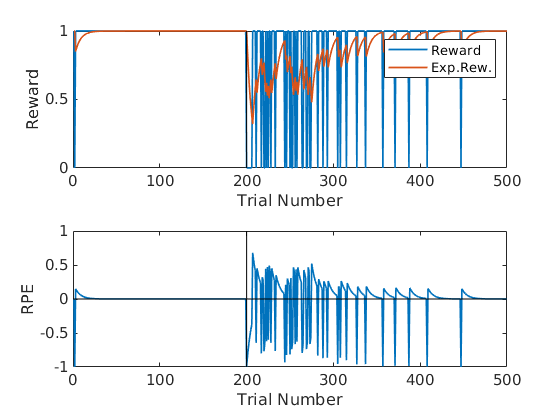
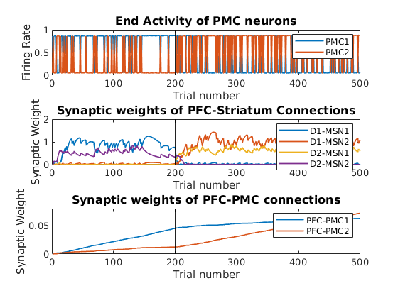
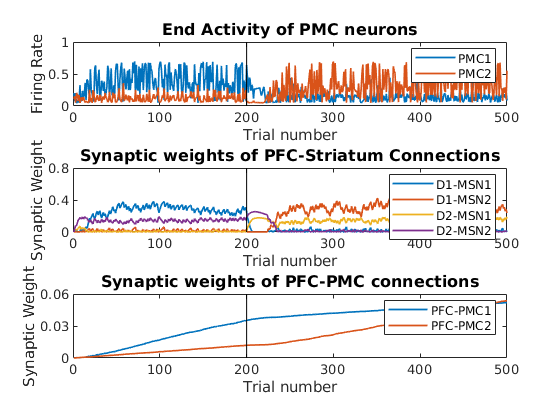
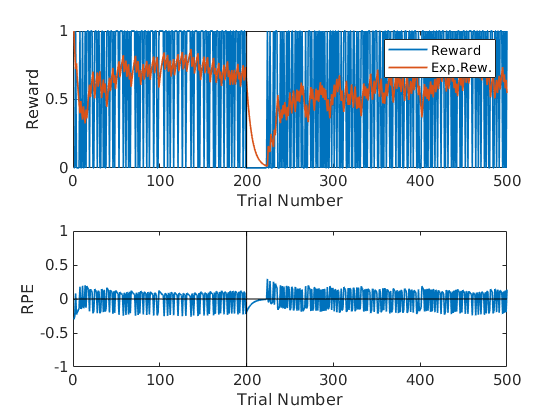
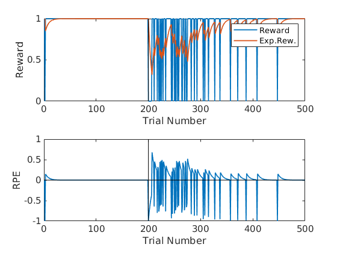
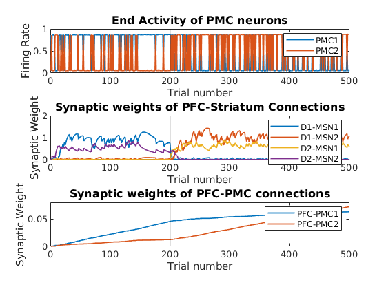
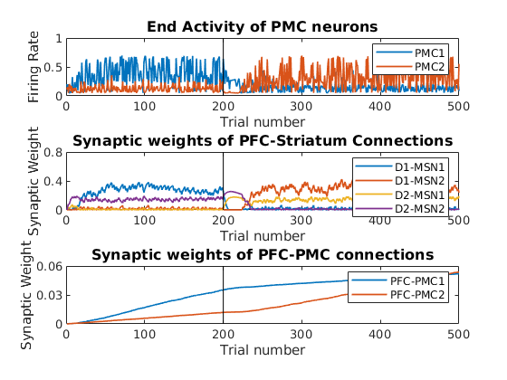
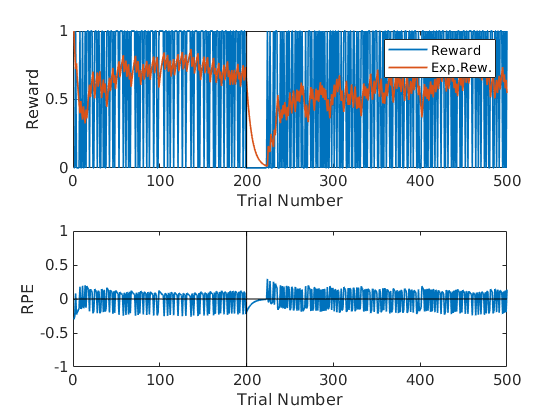

This is the readme for the model associated with the paper:
Mulcahy G, Atwood B, Kuznetsov A (2020) Basal Ganglia role in learning rewarded actions and executing previously learned choices: healthy and diseased states PLoS ONE
This model was contributed by A Kuznetsov. To run the control code type HealthyBG at the matlab command prompt which should generate the following (each script runs in under two minutes):
 
The HuntingtonsModel code will generate these:

and ParkinsonsModel will generate these:



The HuntingtonsModel code will generate these:

and ParkinsonsModel will generate these:

